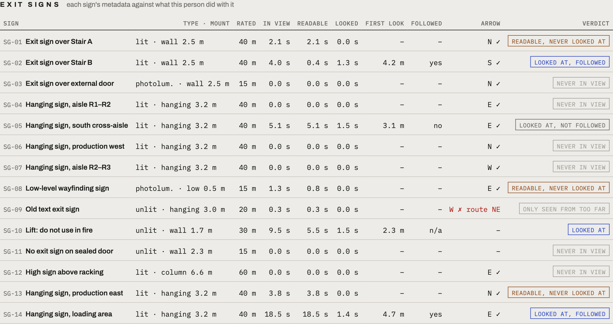

Factory egress · sign audit

SG-14, a lit hanging sign: looked at from 4.7 m, then followed east.
SG-08, low-level photoluminescent, and SG-13: readable, never looked at.
SG-09, a superseded text sign, points west. The shortest route heads north-east.
Visual Vibes · factory egress · report